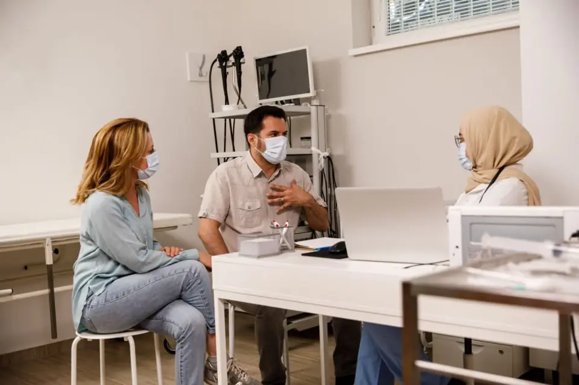

Community
Find a Doctor Who Speaks Your Language in Queens
Looking for a Bengali speaking doctor in Queens? Why language matters for your health, your right to a free interpreter, and how to find care in Elmhurst.

You have probably had this appointment: fifteen minutes, a doctor who is kind but rushed, and a phone interpreter cutting in and out while you try to describe a pain you have had for months. Searching for a Bengali speaking doctor in Queens — or one who speaks Spanish, Hindi, or Urdu — is not a preference or a luxury. It changes what your doctor understands, what you leave with, and whether you come back.
Here is what the research actually shows, what the law already guarantees you, and how to find a provider who speaks your language near you.
Does it really matter if my doctor speaks my language?
Yes, and it is measurable.
In a study of 1,605 Latino adults with limited English proficiency and type 2 diabetes, patients who switched from an English-only primary care doctor to a Spanish-speaking one had a 10% increase in the share of patients with controlled blood sugar (HbA1c under 8%) and a 9% increase in controlled LDL cholesterol, compared with patients who switched from one English-only doctor to another (JAMA Internal Medicine, Parker et al. 2017). Same insurance, same health system, same disease. The variable that moved was language.
A systematic review of 15 studies covering 84,750 patients found that 8 of the 15 showed a significant negative association between doctor–patient language mismatch and at least one clinical outcome, and that all three studies measuring blood sugar control found better control in language-concordant care (Frontiers in Public Health, 2021). The same review found language concordance was significantly associated with actually receiving lifestyle counseling about diet and exercise — the conversation that has to happen before anything changes.
Prevention is where the gap opens up
Patients with limited English proficiency receive recommended preventive screenings less often than English-speaking patients — and it is not fully explained by income, insurance, or how often they see a doctor. Primary care physicians interviewed for one study pointed to complex scheduling systems, poor-quality interpretation, and the fact that interpreted visits take longer than the slot allows, with colorectal cancer screening the hardest of all to get done (Bruce et al., Communication & Medicine). Skipped screening is not a small thing. It is the difference between a polyp and a cancer.
And safety
When language gets in the way, harm follows. In an analysis of 1,083 adverse-event reports from six accredited hospitals, 49.1% of events involving patients with limited English proficiency caused physical harm, versus 29.5% for English-speaking patients (Wilson, Journal of Primary Care & Community Health, 2013). The same review notes The Joint Commission found communication was the root cause of nearly 65% of sentinel events — the unexpected events that cause death or serious injury.
Is Queens really that linguistically diverse?
It is arguably the most linguistically diverse place on earth. Researchers at the Endangered Language Alliance count more languages in Queens than anywhere else in the world (World Economic Forum). Queens County alone has 636,627 residents with limited English proficiency — 25.5% of the borough, the highest count of any county in New York State (NYC Public Advocate, Let's Talk: A Review of Language Access in NYC).
Zoom in on our own neighborhood and it is starker. In Elmhurst and Corona, 37% of residents have limited English proficiency, 51% were born outside the United States, and 25% of adults are uninsured (NYC Health, Community Health Profiles 2018). That is the waiting room we work in every day. It is also why "we speak your language" is not a marketing line here — it is the baseline requirement for doing the job.
What is my legal right to an interpreter?
You have one, and it is free. Two federal laws — Title VI of the Civil Rights Act of 1964 and Section 1557 of the Affordable Care Act — require health programs that receive federal financial assistance to provide language assistance services free of charge (U.S. Department of Health & Human Services, Office for Civil Rights). That covers the overwhelming majority of hospitals, clinics, and health plans in New York City.
Under the Section 1557 final rule that took effect July 5, 2024, covered facilities must not require you to bring your own interpreter or to pay for one, and must not rely on unqualified adults or on minor children to interpret, except as a temporary measure in a genuine emergency (HHS OCR guidance letter, 2024). A qualified interpreter must be proficient in both languages and able to interpret accurately and impartially, without changing, omitting, or adding anything.
Two practical notes. First, this applies whatever your immigration status — the law is about national origin discrimination, not citizenship. Second, if you would rather have a family member interpret, you may ask, but the facility still has to offer you a qualified interpreter.
What to say at the front desk: "I would like an interpreter in [language], please. I understand it is free." That is the whole script.
Why shouldn't I just bring my daughter to translate?
Because it is unfair to her and it is medically risky.
Researchers audiotaped 57 pediatric emergency visits and counted 1,884 interpreter errors. Errors that carried potential clinical consequences made up 12% of errors with professional interpreters, versus 22% with ad hoc interpreters such as family members (Flores et al., Annals of Emergency Medicine, 2012). In recorded encounters using ad hoc interpreters, between 23% and 52% of words and phrases were interpreted incorrectly (Wilson, 2013). The typical mistakes are not exotic: leaving things out, softening bad news, guessing at a word, or answering on the patient's behalf.
The federal rule spells out the rest of the reason children should not do this work: it exposes them to complex medical conversations they are not developmentally ready for, upsets the family's power dynamic, and causes embarrassment (Federal Register, Section 1557 final rule). There are also things you may not want to say in front of your child at all — depression, alcohol, sexual health, a lump you have been hiding.
How do I actually find a doctor who speaks my language?
| Where to look | What you get | Watch out for |
|---|---|---|
| Your insurance plan's provider directory | Language filter plus confirmation the doctor is in-network | Directories go stale — always call the office to confirm |
| Medicare Care Compare | Federal directory that lists languages a clinician speaks | Limited to clinicians enrolled in Medicare |
| NYS Physician Profile | Official New York profile of every licensed MD/DO | Language detail varies by how the doctor filled it in |
| Google Business profiles | Many practices list languages under service options | Verify by phone; listings are self-reported |
| Community referral — mosque, temple, church, salon, grocery | Usually the most accurate source in Queens | Confirm the practice takes your insurance |
Call before you book, and ask these five questions:
- Which languages does the provider personally speak — not the front desk, the provider.
- If not, do you provide a free qualified interpreter, and is it phone, video, or in person?
- Do you take my insurance, and what if I have no insurance at all?
- How soon can I actually be seen?
- Can I text the office with a question afterward?
That last one matters more than people expect. Most confusion happens after the visit, when you are standing in the pharmacy trying to remember whether it was one pill or two.
Which conditions make this even more urgent for our community?
Some of what we treat most in Elmhurst hits our neighbors harder than the national average, which makes clear communication non-negotiable.
- South Asian patients — including our large Bangladeshi and Pakistani community — have among the highest diabetes rates in the country. In one nationally representative analysis, diabetes prevalence was 23.3% in South Asian adults versus 12.1% in non-Hispanic White adults (Diabetes Care, 2024). Because the risk begins at a lower body weight, both the ADA and USPSTF recommend diabetes screening for Asian American adults at a BMI of 23 or higher rather than 25 (USPSTF).
- Heart disease shows up earlier and more aggressively in South Asians, and standard US risk calculators tend to underestimate it (American Heart Association scientific statement, Circulation 2018).
- Latino patients with limited English proficiency had the highest rate of inadequate adherence to new diabetes medications in one Kaiser study — 60.2%, versus 37.5% in White patients (JAMA Internal Medicine, Fernández et al. 2017).
None of that is destiny. It just means the conversation about diet, medication, and screening has to actually land — which is very hard to do through a bad translation.
Related reading: the screenings you need in your 30s, 40s, and 50s and urgent care or ER: a symptom-by-symptom guide.
When to see a doctor about this
Language should never be the reason you wait. Book a visit — and say clearly which language you need — if any of these apply:
- You have stopped taking a medication because you were not sure how or why to take it.
- You left a visit not knowing what your diagnosis was or what happens next.
- You are overdue for screening: blood pressure, blood sugar, cholesterol, or a colon cancer test if you are 45 or older (USPSTF).
- You have a chronic condition — diabetes, high blood pressure, thyroid, PCOS — and have not had a real, unhurried conversation about it in over a year.
- You have been avoiding care because of cost, paperwork, or immigration worry.
- Something is wrong and you cannot name it in English yet. Come anyway. That is what we are for.
If you are having chest pain, trouble breathing, sudden weakness or trouble speaking, or heavy bleeding, do not wait for a language match — call 911. Emergency departments are required to screen and stabilize anyone with an emergency medical condition regardless of insurance or ability to pay (CMS, EMTALA), and they are also required to provide interpretation.
Frequently asked questions
Is there a Bengali speaking doctor near Elmhurst, Queens?+
Yes. Our clinic on 74th Street speaks Bengali, Hindi, Urdu, Spanish, and English, and you can walk in. If you are calling any other office, ask specifically whether the provider speaks Bengali, not just the reception staff.
Do I have to pay for a medical interpreter?+
No. Facilities receiving federal financial assistance must provide language assistance free of charge under Title VI and Section 1557, and they may not require you to bring or pay for your own interpreter (HHS OCR).
Can my child translate for me at the doctor's office?+
Federal rules bar covered health providers from relying on minor children to interpret except temporarily in a true emergency (HHS OCR, 2024). Studies also show ad hoc interpreters make roughly twice the rate of clinically consequential errors as professionals.
Can I see a doctor in Queens without insurance?+
Yes. Many practices, including ours, accept cash payment, and no clinic can refuse you emergency care based on ability to pay. In Elmhurst and Corona, a quarter of adults are uninsured — you are not an unusual case (NYC Health).
Does a phone interpreter count as good enough?+
Legally, yes, if the interpreter is qualified and the audio quality is adequate. Clinically, in-person or a provider who speaks your language directly tends to work better — you keep tone, hesitation, and the small details that get dropped on a bad line.
Will asking for an interpreter slow down my appointment?+
It will usually make it longer, and that is the point. A visit that takes twenty extra minutes and ends with you understanding your plan is faster than three visits that end in confusion.
Getting care in Elmhurst
We are at 40-16 74th Street, Elmhurst, NY 11373, a short walk from the 74 St–Broadway station, and we are open Monday through Saturday, 10am to 7:30pm. Between Dr. Choudhury Hasan, Dr. Ferdous Salauddin, and Keerthana Rajagopal, PA, our team speaks Bengali, Hindi, Urdu, Spanish, and English — no phone tree, no six-week wait, and walk-ins are welcome.
Call or text (718) 682-7090 in whichever language is easiest for you. We take all major insurance plans, we take cash, and not having insurance is not a reason to stay home. Patients from Jackson Heights, Corona, and Woodside come to us for exactly this reason: the appointment is yours, in your language, for as long as it takes.
Key takeaways in other languages
Español: Hablar el mismo idioma que su médico no es un lujo: cambia sus resultados de salud. En un estudio publicado en JAMA Internal Medicine, los pacientes latinos con diabetes que cambiaron de un médico que solo hablaba inglés a uno que hablaba español mejoraron su control del azúcar en la sangre en un 10 por ciento. Recuerde que usted tiene derecho a un intérprete calificado y gratuito en cualquier hospital o clínica que reciba fondos federales; la ley no permite que le cobren por ese servicio ni que le exijan traer a su propio intérprete, y tampoco permite que un niño haga de intérprete salvo en una emergencia. Por favor no le pida a su hijo o hija que traduzca conversaciones médicas: los intérpretes informales cometen aproximadamente el doble de errores con consecuencias clínicas que los profesionales. Antes de reservar una cita, pregunte qué idiomas habla el proveedor mismo, si aceptan su seguro y qué pasa si no tiene seguro. En Elmhurst atendemos en español, y puede llamar o enviar un mensaje de texto al (718) 682-7090 sin cita previa, de lunes a sábado de 10am a 7:30pm. Su cita es suya, en su idioma, el tiempo que haga falta.
বাংলা: ডাক্তারের সঙ্গে নিজের ভাষায় কথা বলতে পারা কোনো বিলাসিতা নয় — এটি সত্যিই আপনার স্বাস্থ্যের ফলাফল বদলে দেয়। JAMA Internal Medicine-এ প্রকাশিত একটি গবেষণায় দেখা গেছে, ডায়াবেটিস রোগীরা যখন শুধু ইংরেজি বলা ডাক্তার ছেড়ে নিজের ভাষায় কথা বলা ডাক্তারের কাছে গিয়েছেন, তখন তাঁদের রক্তে সুগার নিয়ন্ত্রণ ১০ শতাংশ ভালো হয়েছে। মনে রাখবেন, ফেডারেল সহায়তা পায় এমন যেকোনো হাসপাতাল বা ক্লিনিকে বিনামূল্যে যোগ্য দোভাষী পাওয়া আপনার আইনি অধিকার; তারা এর জন্য টাকা নিতে পারে না, আপনাকে নিজের দোভাষী আনতে বাধ্য করতে পারে না, এবং সত্যিকারের ইমার্জেন্সি ছাড়া শিশুকে দোভাষী হিসেবে ব্যবহার করতে পারে না। তাই সন্তানকে দিয়ে অনুবাদ করাবেন না — পরিবারের সদস্য অনুবাদ করলে চিকিৎসাগতভাবে গুরুত্বপূর্ণ ভুল প্রায় দ্বিগুণ হয়। অ্যাপয়েন্টমেন্ট নেওয়ার আগে জিজ্ঞেস করুন ডাক্তার নিজে কোন কোন ভাষা বলেন, তাঁরা আপনার ইনস্যুরেন্স নেন কিনা, এবং ইনস্যুরেন্স না থাকলে কী হবে। এলমহার্স্টে আমরা বাংলা, হিন্দি, উর্দু ও স্পেনীয় ভাষায় কথা বলি; সোম থেকে শনি সকাল ১০টা থেকে সন্ধ্যা ৭:৩০টা পর্যন্ত অ্যাপয়েন্টমেন্ট ছাড়াই আসতে পারেন, অথবা (718) 682-7090 নম্বরে ফোন বা টেক্সট করুন। আপনার সময়টুকু পুরোটাই আপনার — নিজের ভাষায়, যত সময় দরকার।
Sources
- Parker MM, Fernández A, Moffet HH, et al. "Association of Patient-Physician Language Concordance and Glycemic Control for Limited–English Proficiency Latinos With Type 2 Diabetes." *JAMA Internal Medicine*, 2017
- Diamond L, et al. / Cano-Ibáñez N, et al. "Physician–Patient Language Discordance and Poor Health Outcomes: A Systematic Scoping Review." *Frontiers in Public Health*, 2021
- Bruce KH, Schwei RJ, Park LS, Jacobs EA. "Barriers and facilitators to preventive cancer screening in Limited English Proficient (LEP) patients." *Communication & Medicine*
- Flores G, Abreu M, Barone CP, Bachur R, Lin H. "Errors of medical interpretation and their potential clinical consequences: a comparison of professional versus ad hoc versus no interpreters." *Annals of Emergency Medicine*, 2012
- Wilson CC. "Patient Safety and Healthcare Quality: The Case for Language Access." 2013
- U.S. Department of Health & Human Services, Office for Civil Rights. "Limited English Proficiency (LEP)"
- HHS Office for Civil Rights. Dear Colleague Letter on Section 1557 Language Access, 2024
- Federal Register, Vol. 89, No. 88 — Section 1557 Final Rule, May 6, 2024
- Office of the New York City Public Advocate. "Let's Talk: A Review of Language Access in NYC"
- NYC Department of Health and Mental Hygiene. "Community Health Profiles 2018: Elmhurst and Corona"
- World Economic Forum. "Welcome to the language capital of the world: Queens, New York"
- Kanaya AM, et al. "Diabetes in South Asians: Uncovering Novel Risk Factors With Longitudinal Epidemiologic Data." *Diabetes Care*, 2024
- Volgman AS, et al. "Atherosclerotic Cardiovascular Disease in South Asians in the United States." AHA Scientific Statement, *Circulation*, 2018
- U.S. Preventive Services Task Force. "Prediabetes and Type 2 Diabetes: Screening"
- U.S. Preventive Services Task Force. "Colorectal Cancer: Screening"
- Centers for Medicare & Medicaid Services. "Emergency Medical Treatment & Labor Act (EMTALA)"
- Fernández A, et al. "Adherence to Newly Prescribed Diabetes Medications Among Insured Latino and White Patients With Diabetes." *JAMA Internal Medicine*, 2017 (summary)
- Medicare Care Compare
- New York State Physician Profile
Talk to a doctor who has time for you.
New patients welcome. Same-day and evening visits, in your language. Most insurance, Medicaid & self-pay accepted.
This article is general health information written in plain language and is educational only — it is not a substitute for advice from your own clinician. Sources are linked throughout. If you are having a medical emergency, call 911.